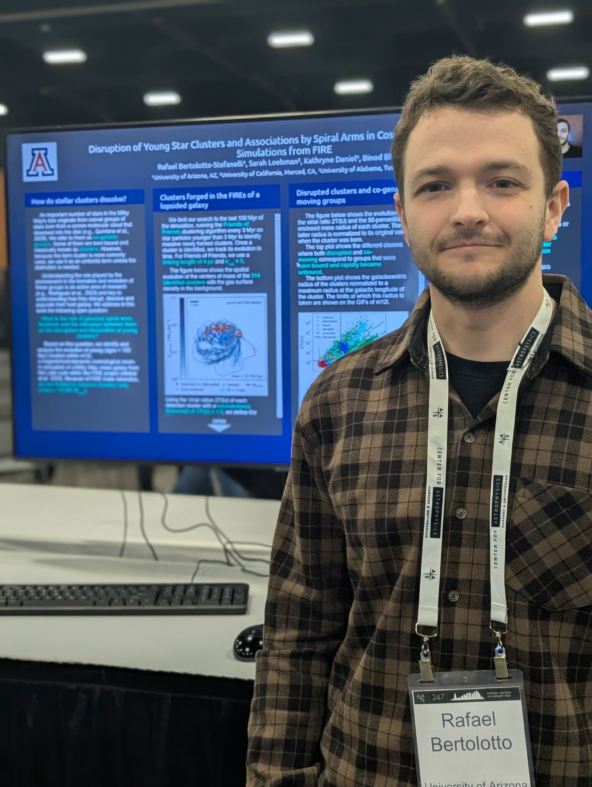

Rafael Bertolotto Stefanelli
I am a graduate student at the University of Arizona, where I study how young stellar clusters disrupt and dissolve within their host galaxies. Before this I did my undergraduate and master in Astrophysics at the Universidad de la República (Uruguay).
I love science in general, and I am particularly in love with anything related to the dynamical evolution of galaxies like the Milky Way, how stellar clusters form and evolve within them, and how these two actors influence each other's evolution.
Department of Astronomy, Steward Observatory
University of Arizona